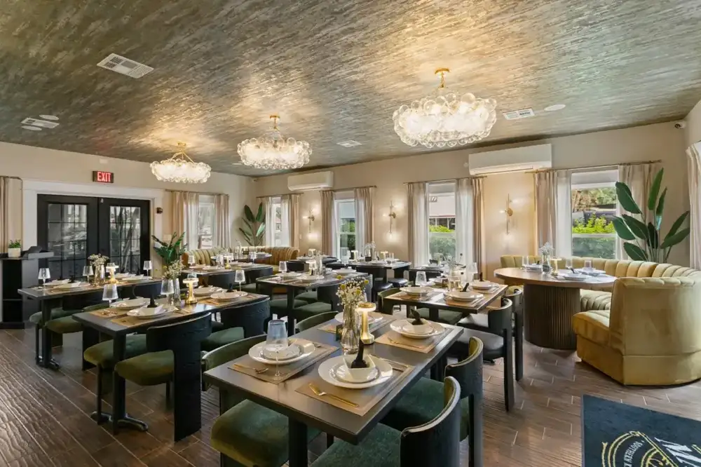
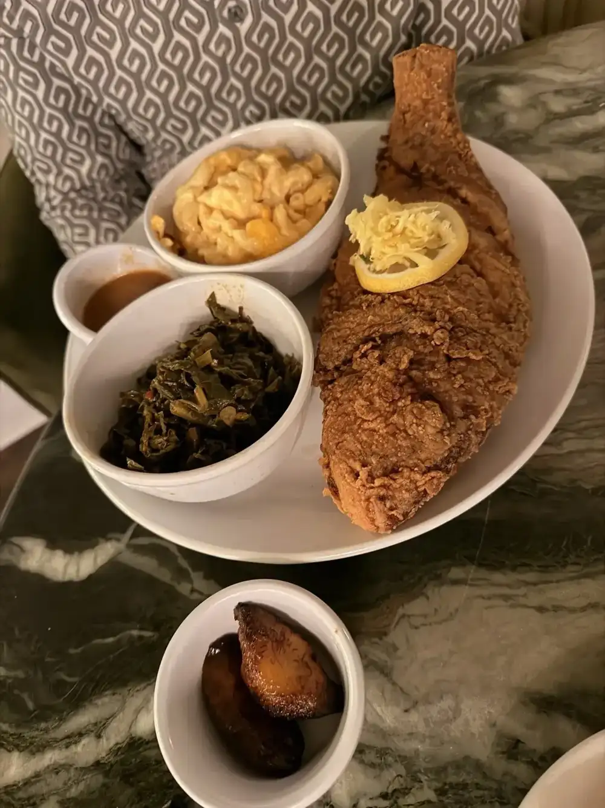
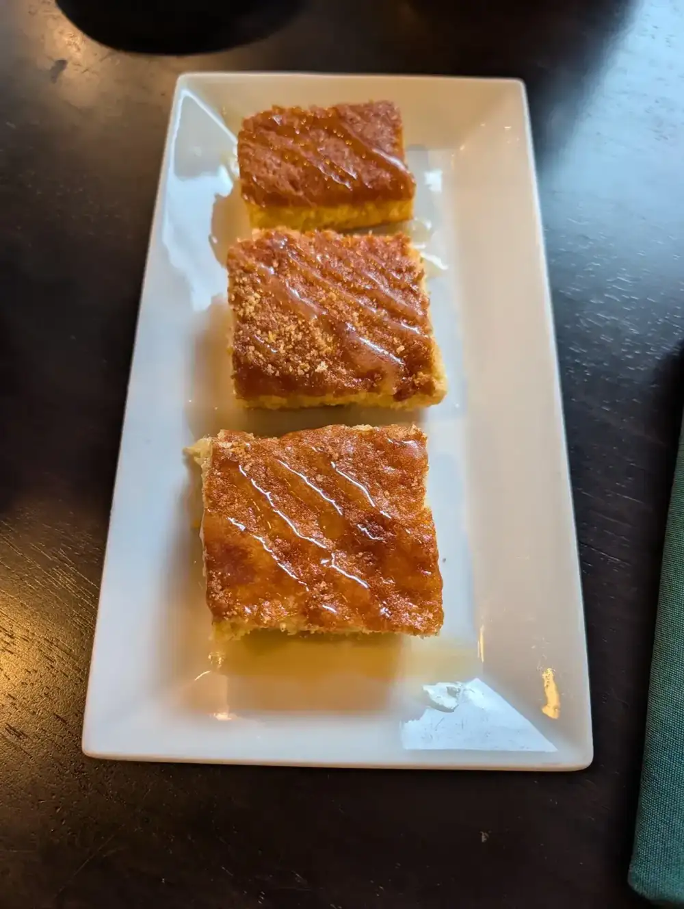

Sunday brunch
Brunch on the rooftop every Sunday from 11 AM to 4 PM, with craft cocktails and a DJ. Guests praise the Soul Rolls and the oxtails and grits.
Plan this →Soul food · N Florida Ave, Tampa
Slow-cooked Southern flavors with a Caribbean turn. Brunch, dinner and handcrafted cocktails, and a rooftop above it all.

What guests order first
Sunday brunch, dinner and cocktails, and rooftop nights.
Brunch on the rooftop every Sunday from 11 AM to 4 PM, with craft cocktails and a DJ. Guests praise the Soul Rolls and the oxtails and grits.
Plan this →
Oxtails with rice and peas and plantains, lobster and shrimp pasta, and starters like collard dip and Thai chili cauliflower.
Plan this →
Handcrafted cocktails, happy hour Wednesday and Thursday 3 PM to 6 PM, and live DJs on the rooftop Friday and Saturday.
Plan this →From call to cleanup
Rhythm & Roots on Wednesday, Lovers & Friends on Thursday, rooftop DJs Friday and Saturday, brunch Sunday.
Send a request or call. Inside, upstairs or on the deck.
Smart dress, no athletic wear. 13 and up.
Start with cornbread, then ask your server for suggestions.


4.8 ★ · 2827 Google reviews
Sunday Brunch was absolutely amazing! The Soul Rolls are unique, a different flavor profile with every bite! Oxtails and Grits were a hit but make you want to pick them up to really get in there. Lobster and Shrimp Pasta was delicious and creamy with a portion that was enough for 2 meals for me. There was a saxophonist inside and a fantastic DJ on the rooftop. Service was excellent!
Sunday Brunch was absolutely amazing! The Soul Rolls are unique, a different flavor profile with every bite! Oxtails and Grits were a hit but make you want to pick them up to really get in there. Lobster and Shrimp Pasta was delicious and creamy with a portion that was enough for 2 meals for me. There was a saxophonist inside and a fantastic DJ on the rooftop. Service was excellent!
Phenomenal experience from start to finish! The staff were incredibly friendly and welcoming. The atmosphere was laid-back yet upscale, offering the perfect balance. The food was absolutely delicious! comfort food with a modern twist! I had the oxtail with jasmine rice, and it was incredible! Great cocktails, awesome specials, and outstanding service. I’ll definitely be coming back to explore more of the menu.
This is our new favorite restaurant! We went for brunch and it was phenomenal! The food was fantastic and the service was impeccable! Good music, food, vibe, what more can you ask for! Nicole our server was great! We will be back!!

Behind the table
Mangos began with Sunday meals, holiday spreads and recipes passed down through the family. A dream in a home kitchen grew into a dining room in Seminole Heights.
The food is Southern and slow-cooked, with Caribbean influence. Oxtails come with rice and peas and plantains, and the Soul Rolls are the one guests write home about.
Every guest is treated like family. Reviewers name their servers and hosts, and say the room feels laid-back and upscale at once.
Before you book
Wednesday and Thursday 3 PM–10 PM, Friday and Saturday 3 PM–11 PM, Sunday brunch 11 AM–4 PM. Closed Monday and Tuesday.
Wednesday and Thursday, 3 PM to 6 PM.
Wednesday evenings are Rhythm & Roots with live music. Thursday, Friday and Saturday nights and Sunday brunch bring DJs to the rooftop.
Yes. Athletic wear, beachwear and very revealing clothing are not permitted. Mangos is a 13+ establishment.
Yes. Send a request here or call the restaurant.
Mangos lists events and catering. Send the date and headcount and we will get back to you.
Get in touch
5137 N Florida Ave, Tampa, FL 33603
Wednesday and Thursday 3 PM–10 PM, Friday and Saturday 3 PM–11 PM, Sunday brunch 11 AM–4 PM. Closed Monday and Tuesday. Mangos has a dress code and is a 13+ establishment.
Tampa, Temple Terrace, Carrollwood, Town 'n' Country, Gibsonton